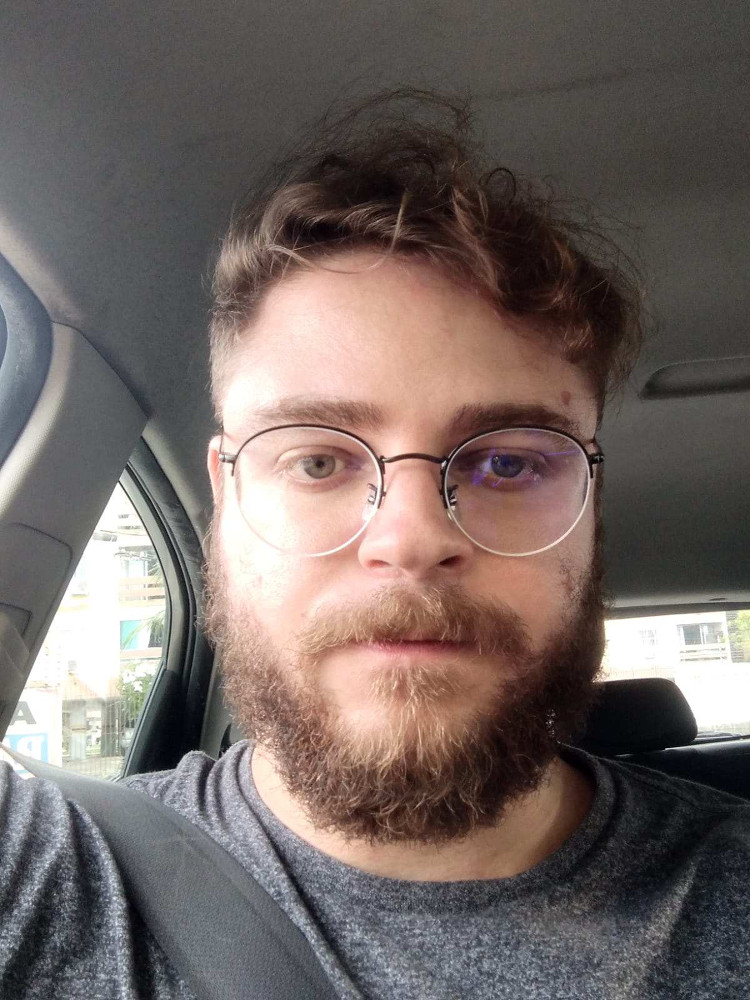

Me chamo Anderson de Almeida, tenho 29 anos, sou Paraíbano, nascido e, até hoje, residente da cidade de João Pessoa. Sou alguém tímido/introvertido, organizado, muito calmo, paciente e compreensível, além de possuir um elevado senso de responsabilidade. Não compactuo com preconceitos, tenho respeito pelas escolhas e vivência individuais de cada um e admiro imensamente pessoas simples!
Tenho como hobbies cinema e jogos eletrônicos. Estou sempre assistindo filmes e séries e tenho muito interesse por videogames como passatempo! Gosto bastante de ouvir música, desde muito novo essa tem sido uma atividade bastante presente no meu coditiano. Minha banda favorita se chama Rage Against the Machine, mas isso é tudo que consigo ranquear! Assim como acontece com filmes, conheço e ouço tanta coisa que fica difícil postular hierarquias!
Minha formação acadêmica original é na área de negócios, mais especificamente, em Ciências Contábeis [+ Saiba mais...]. Nunca atuei diretamente com contabilidade, mas trabalhei por alguns anos em setores administrativos de empresas (Financeiro e Almoxarifado). Sempre me interessei pela automação de processos e implementação de rotinas geradoras de relatórios, com o intuito de facilitar tomadas de decisões a nível gerencial, utilizando para isso, o Microsoft Excel.
Gostava tanto de me envolver com esse tipo de atribuição que acabei entrando no mundo da programação básica com Visual Basic for Applications (VBA) e, então, em 2023, decidi migrar para a área de Tecnologia da Informação.
Ainda não iniciei minha atuação profissional na área, mas tenho me dedicado aos estudos e tomado gosto pelos conteúdos que a envolvem, especialmente programação em linguagem Python e Banco de Dados!